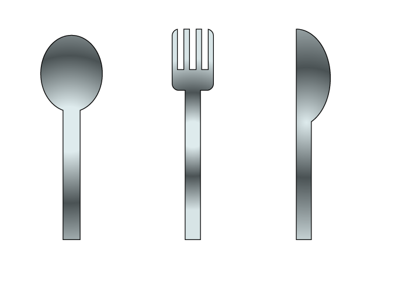
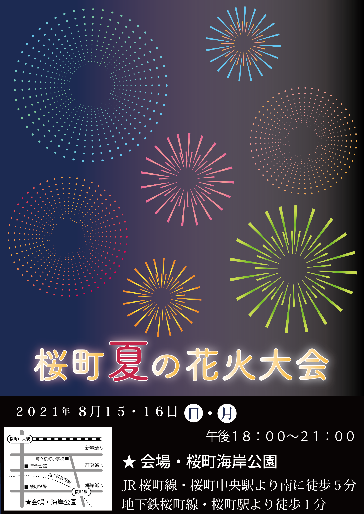

ポートフォリオ集
ランディングページ（架空の女性向けアパレル企業）のポートフォリオです。
↓以下のリンクから閲覧出来ます↓
Photoshopのポートフォリオです。
Photoshopの学習終了時の課題、写真を近未来風に加工した2枚
同じ写真を2枚重ねて前面の一部をたくさん細くスライドしてずらし、フィルター機能でノイジーに加工。
そこに凹凸で作った文字を重ねて、文字が見えるようにグラデーションをかける。という手法のものです。
加工例を集めた本から抜粋して、この作品を選んで作成しました。


架空のランディングページ用にフリー素材に文字を追加
商品イメージにPhotoshopで文字を追加するという課題で作成したものです。
沢山作った内の一部を載せています。どれも結局サイトでは使用しなかったものですが・・・。


架空のランディングページに使用した商品イメージ画像
最終的にこのデザインに辿り着き、花の種類を2種類作ってみましたが、
今は、上の方（ローズではない方）の画像を使用しています。


ランディングページのバナー画像
Photoshopで、フリー素材の加工（画像反転・貝殻の移動・移動後に周囲を馴染ませる・文字入れ・
カラーグラデーションの追加など）をしました。

illustratorのポートフォリオです


↑学習前

教材模写
↑学習中
